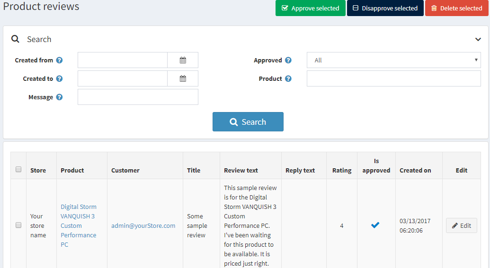
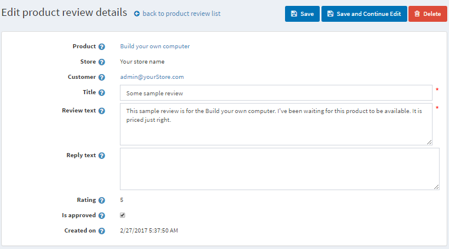
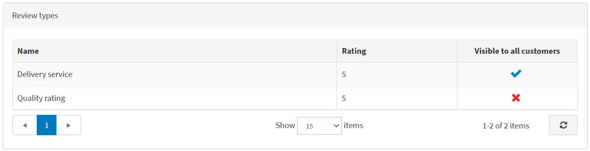

商品評論
商品評論是顧客對商品的意見回饋。評論也可以包含評分。
在前台網站中，評論會顯示在商品詳細頁面上。顧客可以為各種商品撰寫評論。當評論撰寫完畢並經由商店管理員核准後，其他顧客可以點擊評論旁的「Yes」（是）或「No」（否）來判定該則評論是否有幫助。
Note
預設情況下，評論必須經過商店管理員核准後，才會顯示在前台網站中。不過，若商店管理員決定評論不需要核准，可以更改此預設行為。若要取消強制性的商品評論核准，請前往 設定 → 設定 → 目錄設定，並取消勾選 商品評論必須核准 選項。
管理商品評論
若要管理商品評論，請前往 目錄 → 商品評論。屆時將會顯示如下的 商品評論 視窗：

搜尋評論
您可以透過下列方式搜尋評論：
- 建立日期範圍：使用「建立日期起」與「建立日期迄」。在「建立日期起」與「建立日期迄」欄位中，輸入搜尋的日期範圍。您也可以點擊下拉式行事曆並選擇所需的日期範圍。
- 訊息：可用於根據標題或文字片段來尋找評論。
- 已核准：可用於根據「已核准」屬性來尋找評論。
- 商品：對特定商品的相關評論進行排序與顯示。
- 商店：允許檢視特定商店商品的所有評論。如果您擁有超過一家商店，將會顯示此欄位。
核准或撤銷核准
選擇您想要核准或撤銷核准的評論，並分別點擊 核准所選 按鈕或 撤銷核准所選 按鈕。
編輯商品評論
若要編輯商品評論，請點擊評論旁的 編輯。屆時將會顯示如下的 編輯商品評論詳細資料 視窗：

- 檢視此評論所屬的 商品。點擊此欄位後，您將會被重新導向至編輯商品詳細資料視窗，您可以在該處編輯商品資訊。
- 檢視此評論撰寫所在的 商店。
- 以及建立該評論的 顧客。點擊此欄位後，您將會被重新導向至編輯顧客詳細資料視窗，您可以在該處編輯顧客資訊。
- 您可以編輯評論的 標題。
- 以及它的 內容。
- 在 回覆內容 欄位中，您可以對評論留下回覆；該回覆將會顯示在前台網站的評論下方。
- 評分 顯示顧客的評分。該欄位無法編輯。
- 勾選 已核准 核取方塊即可核准評論。
- 建立於 顯示評論建立的日期與時間。
評論類型
如果您已經建立了自訂的評論類型，將會看到 評論類型 面板：

在此區域中，您可以檢視目前商品的所有額外評論。評分 顯示顧客的評分。表格中的任何欄位皆無法編輯。
若要取得關於設定評論的更多資訊，請參閱 商品評論 與 評論類型 章節。